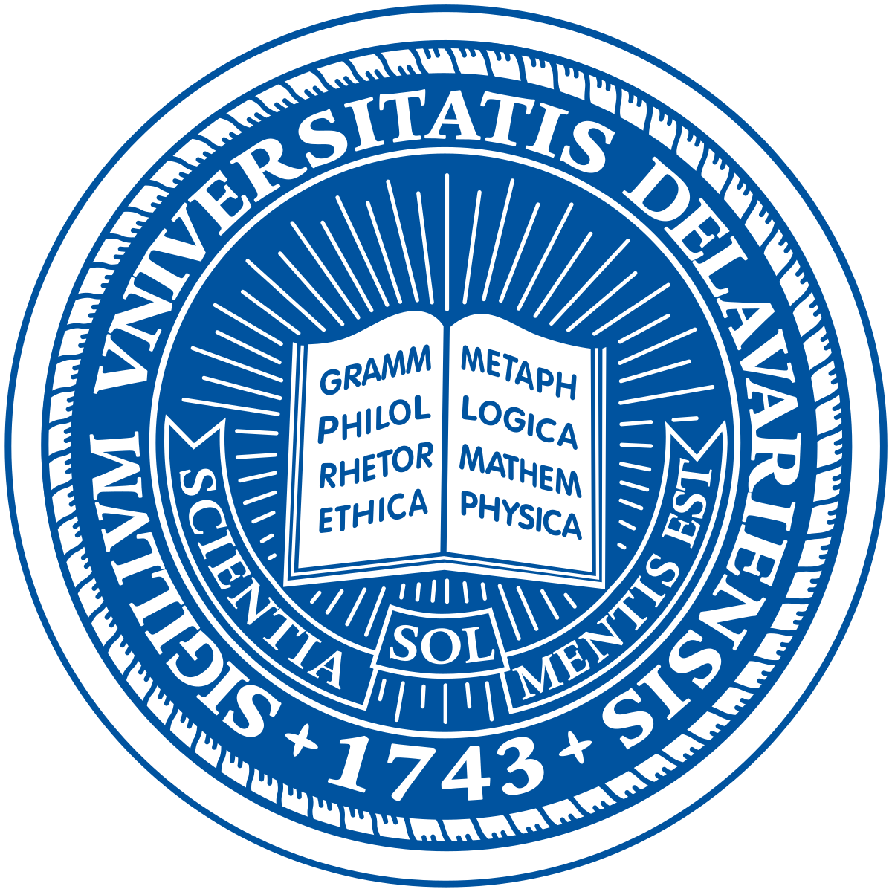

Qitong Wang (王琦童)
Ph.D. Student
University of Delaware
Dept. of Computer & Information Sciences
I am currently pursuing my Ph.D. in the Department of Computer and Information Sciences (CIS) at the University of Delaware (UD), advised by Xi Peng. Previously I collaborate with Julie Michelle Klinger on designing machine learning frameworks tailored for geospatial data analysis. My research primarily revolves around Computer Vision and Machine Learning. Specifically, I am dedicated to exploring the application of trustworthy deep learning models. Additionally, my research also involves developing frameworks for video learning and understanding.
Prior to joining the University of Delaware, I completed my M.S. degree in the Department of Computer Science at Boston University advised by Margrit Betke. During that period, my research focus was on developing models for text detection and recognition. Before that, I got my B.Eng. degree from the Wuhan University of Technology.
I am looking for internship opportunities in the summer of 2025. Please feel free to reach out!
News
- (Sep 2024) I will be serving as a reviewer of PLOS ONE.
- (May 2024) I will be serving as a reviewer of BMVC 2024.
- (May 2024) Received CIS Distinguished Graduate Student Award of the UD.
- (Mar 2024) I will be serving as a reviewer of ECCV 2024.
- (Dec 2023) Received Outstanding Conference Travel Award from CIS Department of the UD.
- (Sep 2023) Invited talk at Off-Earth Geopolitics Workshop @ University of Oxford.
- (Jul 2023) Paper on unpaired mutiview accepted at ICCV 2023.
- (May 2023) Passed my preliminary exam.
- (Nov 2022) Paper on video augmentation accepted at CVIU 2022.
- (May 2022) Paper on text detection accepted at TMM 2022.
- (Sep 2021) Joined Deep-REAL lab at University of Delaware.
Publications

Learning from Semantic Alignment between Unpaired Multiviews for Egocentric Video Recognition
International Conference on Computer Vision (ICCV), Paris, France, 2023.
@InProceedings{Wang_2023_ICCV,
author = {Wang, Qitong and Zhao, Long and Yuan, Liangzhe and Liu, Ting and Peng, Xi},
title = {Learning from Semantic Alignment between Unpaired Multiviews for Egocentric Video Recognition},
booktitle = {Proceedings of the IEEE/CVF International Conference on Computer Vision (ICCV)},
month = {October},
year = {2023},
pages = {3307-3317}
}

Learning Representational Invariances for Data-Efficient Action Recognition
Computer Vision and Image Understanding (CVIU), 2022.
@article{zou2023learning,
title={Learning representational invariances for data-efficient action recognition},
author={Zou, Yuliang and Choi, Jinwoo and Wang, Qitong and Huang, Jia-Bin},
journal={Computer Vision and Image Understanding},
volume={227},
pages={103597},
year={2023},
publisher={Elsevier}
}
Region-aware Arbitrary-shaped Text Detection with Progressive Fusion
IEEE Transactions on Multimedia (TMM), 2022.
@article{wang2022region,
title={Region-aware Arbitrary-shaped Text Detection with Progressive Fusion},
author={Wang, Qitong and Fu, Bin and Li, Ming and He, Junjun and Peng, Xi and Qiao, Yu},
journal={IEEE Transactions on Multimedia},
year={2022},
publisher={IEEE}
}
Semantic-Based Sentence Recognition in Images Using Bimodal Deep Learning
IEEE International Conference on Image Processing (ICIP), Anchorage, Alaska, USA, 2021.
@article{Zheng2021SemanticBasedSR,
title={Semantic-Based Sentence Recognition in Images Using Bimodal Deep Learning},
author={Y. Zheng and Qitong Wang and Margrit Betke},
journal={2021 IEEE International Conference on Image Processing (ICIP)},
year={2021},
pages={2753-2757},
url={https://api.semanticscholar.org/CorpusID:238082348}
}
A Method for Detecting Text of Arbitrary Shapes in Natural Scenes That Improves Text Spotting
Workshop on Text and Documents in the Deep Learning Era (CVPR), Virtual, 2020.
@InProceedings{Wang_2020_CVPR_Workshops,
author = {Wang, Qitong and Zheng, Yi and Betke, Margrit},
title = {A Method for Detecting Text of Arbitrary Shapes in Natural Scenes That Improves Text Spotting},
booktitle = {Proceedings of the IEEE/CVF Conference on Computer Vision and Pattern Recognition (CVPR) Workshops},
month = {June},
year = {2020}
}
Service
- Conference Reviewer - ECCV-2024, BMVC-2024.
- Journal Reviewer - IEEE Transactions on Image Processing (TIP), PLOS ONE.
- Volunteering Conference Reviewer - CVPR-2023, NeurIPS-2023, AAAI-2024.
- Volunteering Journal Reviewer - IEEE Transactions on Artificial Intelligence (TAI), IEEE Transactions on Pattern Analysis and Machine Intelligence (TPAMI).
Education

University of Delaware
May 2021 - Present
Doctor of Philosophy
Boston University
Sep 2018 - May 2020
Master of Science
Wuhan University of Tech
Sep 2014 - Jun 2018
Bachelor of Engineering
Intern & Collab

Google Research
Research Collaboration
Sep 2021 - Nov 2022
Amazon Web Service
Applied Science Intern
Jun 2021 - Aug 2021
Shenzhen Inst of Adv Tech
Visiting Student
May 2020 - Aug 2020
MISC
My MBTI is ENTJ-A. I have perfect pitch. :)